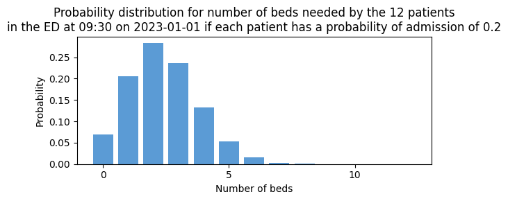
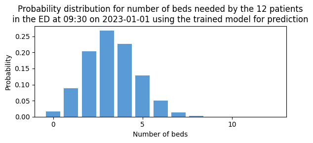
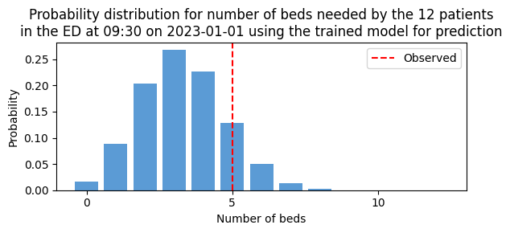
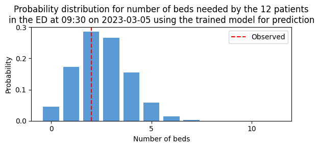

Create group snapshots
About snapshots
Collecting patient snapshots together into a group snapshot is useful when predicting a bed count distribution at a point in time. A group snapshot is a subset of patients who were in the ED on a single snapshot date, at a prediction time.
In this notebook, I show how patientflow is designed to work with group snapshots. patientflow divides patient snapshots into their groups, and stores the group snapshots as dictionary with:
* snapshot_date as the key
* snapshot_ids of each patient snapshot as the values
This structure is a convenient way to organise the data when making bed count predictions for different snapshot dates and prediction times, and especially when evaluating those predictions (see next notebook).
About the examples in this notebook
In this notebook I use fake data that resembles visits to the Emergency Department (ED). The dataset covers mutiple snapshot dates and prediction times.
To start with a very simple example, I apply a series of Bernoulli trials to one group snapshot and visualise the bed count distribution. In that simple example, every patient has the same probability of the outcome.
I then train a model that predicts a probability of admission for each patient. This is a more realistic example, as each patient can have a different probability of admission, based on their data. I apply Bernoulli trials to visualise the predicted distribution of beds needed for those patients.
I demonstrate functions in patientflow that handle the preparation of group snapshots for inference.
# Reload functions every time
%load_ext autoreload
%autoreload 2
Set up prediction times
The first step is to specify the times of day at which we want to create predictions.
prediction_times = [(6, 0), (9, 30), (12, 0), (15, 30), (22, 0)] # each time is expressed as a tuple of (hour, minute)
Create patient snapshots
First I generate some fake data on patients in an Emergency Department (ED). See the 2a_Create_patient_snapshots notebook for more information about to convert finished hospital visits into snapshots.
from patientflow.generate import create_fake_snapshots
prediction_times = [(6, 0), (9, 30), (12, 0), (15, 30), (22, 0)]
snapshots_df=create_fake_snapshots(prediction_times=prediction_times,
start_date='2023-01-01',
end_date='2023-04-01',
mean_patients_per_day=100)
snapshots_df.head()
| snapshot_date | prediction_time | patient_id | visit_number | is_admitted | age | latest_triage_score | num_cbc_orders | num_troponin_orders | num_urinalysis_orders | num_bmp_orders | num_d-dimer_orders | |
|---|---|---|---|---|---|---|---|---|---|---|---|---|
| snapshot_id | ||||||||||||
| 0 | 2023-01-01 | (6, 0) | 270 | 1 | 0 | 47 | 5.0 | 1 | 0 | 0 | 0 | 0 |
| 1 | 2023-01-01 | (6, 0) | 3678 | 12 | 1 | 44 | 2.0 | 0 | 1 | 1 | 0 | 0 |
| 2 | 2023-01-01 | (9, 30) | 6514 | 86 | 0 | 43 | 4.0 | 1 | 1 | 0 | 1 | 0 |
| 3 | 2023-01-01 | (9, 30) | 4956 | 26 | 0 | 53 | 5.0 | 1 | 0 | 1 | 0 | 0 |
| 4 | 2023-01-01 | (9, 30) | 3741 | 9 | 1 | 66 | 4.0 | 1 | 0 | 0 | 0 | 0 |
Note that each record in the snapshots dataframe is indexed by a unique snapshot_id.
Prepare group snapshots
patientflow includes a prepare_group_snapshot_dict() function. As input, it requires a pandas dataframe with a snapshot_date column. If a start date and end date are provided, the function will check for any intervening snapshot dates that are missing, and create an empty group snapshot for this date
Here I create a group snapshot dictionary, for patients in the ED at 09.30.
from patientflow.prepare import prepare_group_snapshot_dict
# select the snapshots to include in the probability distribution,
group_snapshots_dict = prepare_group_snapshot_dict(
snapshots_df[snapshots_df.prediction_time == (9,30)]
)
The keys of the dictionary are the snapshot_date. The values are a list of patients in the ED at that time, identified by their unique snapshot_id.
print("First 10 keys in the snapshots dictionary")
print(list(group_snapshots_dict.keys())[0:10])
First 10 keys in the snapshots dictionary
[datetime.date(2023, 1, 1), datetime.date(2023, 1, 2), datetime.date(2023, 1, 3), datetime.date(2023, 1, 4), datetime.date(2023, 1, 5), datetime.date(2023, 1, 6), datetime.date(2023, 1, 7), datetime.date(2023, 1, 8), datetime.date(2023, 1, 9), datetime.date(2023, 1, 10)]
From the first key in the dictionary, we can see the patients belonging to this first snapshot.
first_group_snapshot_key = list(group_snapshots_dict.keys())[0]
first_group_snapshot_values = group_snapshots_dict[first_group_snapshot_key]
print(f"\nThere are {len(first_group_snapshot_values)} patients in the first group snapshot")
print("\nUnique snapshot_ids in the first group snapshot:")
print(first_group_snapshot_values)
# print("\nPatient snapshots belonging to the first group snapshot:")
# snapshots_df.loc[first_group_snapshot_values]
There are 12 patients in the first group snapshot
Unique snapshot_ids in the first group snapshot:
[2, 3, 4, 5, 6, 7, 8, 9, 10, 11, 12, 13]
We can use the indices to identify the full patient snapshots.
snapshots_df.loc[first_group_snapshot_values]
| snapshot_date | prediction_time | patient_id | visit_number | is_admitted | age | latest_triage_score | num_cbc_orders | num_troponin_orders | num_urinalysis_orders | num_bmp_orders | num_d-dimer_orders | |
|---|---|---|---|---|---|---|---|---|---|---|---|---|
| snapshot_id | ||||||||||||
| 2 | 2023-01-01 | (9, 30) | 6514 | 86 | 0 | 43 | 4.0 | 1 | 1 | 0 | 1 | 0 |
| 3 | 2023-01-01 | (9, 30) | 4956 | 26 | 0 | 53 | 5.0 | 1 | 0 | 1 | 0 | 0 |
| 4 | 2023-01-01 | (9, 30) | 3741 | 9 | 1 | 66 | 4.0 | 1 | 0 | 0 | 0 | 0 |
| 5 | 2023-01-01 | (9, 30) | 5287 | 41 | 0 | 60 | 4.0 | 1 | 0 | 0 | 0 | 0 |
| 6 | 2023-01-01 | (9, 30) | 872 | 16 | 0 | 59 | 3.0 | 1 | 0 | 0 | 0 | 0 |
| 7 | 2023-01-01 | (9, 30) | 2108 | 20 | 1 | 68 | 3.0 | 0 | 0 | 0 | 1 | 0 |
| 8 | 2023-01-01 | (9, 30) | 6748 | 67 | 0 | 43 | 2.0 | 0 | 0 | 1 | 0 | 0 |
| 9 | 2023-01-01 | (9, 30) | 2282 | 28 | 1 | 73 | 1.0 | 0 | 1 | 1 | 0 | 1 |
| 10 | 2023-01-01 | (9, 30) | 2502 | 50 | 0 | 63 | 3.0 | 0 | 0 | 0 | 0 | 0 |
| 11 | 2023-01-01 | (9, 30) | 6078 | 31 | 1 | 34 | 2.0 | 0 | 0 | 0 | 0 | 0 |
| 12 | 2023-01-01 | (9, 30) | 2832 | 84 | 1 | 32 | 3.0 | 0 | 0 | 0 | 0 | 0 |
| 13 | 2023-01-01 | (9, 30) | 6357 | 74 | 0 | 20 | NaN | 0 | 0 | 0 | 0 | 0 |
More useful is to return not just the indices, but also the data for each visit in the group snapshot. This can be done with the prepare_patient_snapshots, which makes the data ready for processing in groups. This will:
- filter out visits to include only those at the requested prediction time
- randomly select one snapshot per visit, if requested. If
single_snapshot_per_visitis set to True, avisit_colargument must be used, given the name of the column containing visit identifiers - return a tuple of (X, y) matrices, ready for inference. The column containing the outcome (ie the label) is specified in the
label_colargument.
from patientflow.prepare import prepare_patient_snapshots
first_snapshot_X, first_snapshot_y = prepare_patient_snapshots(
df=snapshots_df.loc[first_group_snapshot_values],
prediction_time=(9,30),
single_snapshot_per_visit=False,
label_col="is_admitted"
)
first_snapshot_X
| snapshot_date | prediction_time | patient_id | visit_number | age | latest_triage_score | num_cbc_orders | num_troponin_orders | num_urinalysis_orders | num_bmp_orders | num_d-dimer_orders | |
|---|---|---|---|---|---|---|---|---|---|---|---|
| snapshot_id | |||||||||||
| 2 | 2023-01-01 | (9, 30) | 6514 | 86 | 43 | 4.0 | 1 | 1 | 0 | 1 | 0 |
| 3 | 2023-01-01 | (9, 30) | 4956 | 26 | 53 | 5.0 | 1 | 0 | 1 | 0 | 0 |
| 4 | 2023-01-01 | (9, 30) | 3741 | 9 | 66 | 4.0 | 1 | 0 | 0 | 0 | 0 |
| 5 | 2023-01-01 | (9, 30) | 5287 | 41 | 60 | 4.0 | 1 | 0 | 0 | 0 | 0 |
| 6 | 2023-01-01 | (9, 30) | 872 | 16 | 59 | 3.0 | 1 | 0 | 0 | 0 | 0 |
| 7 | 2023-01-01 | (9, 30) | 2108 | 20 | 68 | 3.0 | 0 | 0 | 0 | 1 | 0 |
| 8 | 2023-01-01 | (9, 30) | 6748 | 67 | 43 | 2.0 | 0 | 0 | 1 | 0 | 0 |
| 9 | 2023-01-01 | (9, 30) | 2282 | 28 | 73 | 1.0 | 0 | 1 | 1 | 0 | 1 |
| 10 | 2023-01-01 | (9, 30) | 2502 | 50 | 63 | 3.0 | 0 | 0 | 0 | 0 | 0 |
| 11 | 2023-01-01 | (9, 30) | 6078 | 31 | 34 | 2.0 | 0 | 0 | 0 | 0 | 0 |
| 12 | 2023-01-01 | (9, 30) | 2832 | 84 | 32 | 3.0 | 0 | 0 | 0 | 0 | 0 |
| 13 | 2023-01-01 | (9, 30) | 6357 | 74 | 20 | NaN | 0 | 0 | 0 | 0 | 0 |
Very simple example of making a prediction for a group snapshot
Let's make some predictions for this group, in the simplest possible way. We'll give each of them a probability of being admitted of 0.2.
This is equivalent to computing the probable outcome of 12 coin flips, with probability of heads of 0.2.
from scipy import stats
prob_dist_data = stats.binom.pmf(range(13), 12, 0.2)
prob_dist_data
array([6.87194767e-02, 2.06158430e-01, 2.83467842e-01, 2.36223201e-01,
1.32875551e-01, 5.31502203e-02, 1.55021476e-02, 3.32188877e-03,
5.19045120e-04, 5.76716800e-05, 4.32537600e-06, 1.96608000e-07,
4.09600000e-09])
prob_admission_first_group_snapshot = 0.2*len(first_group_snapshot_values)
from patientflow.viz.prob_dist_plot import prob_dist_plot
from patientflow.viz.utils import format_prediction_time
title = (
f'Probability distribution for number of beds needed by the '
f'{len(first_group_snapshot_values)} patients\n'
f'in the ED at {format_prediction_time((9,30))} '
f'on {first_group_snapshot_key} if each patient has a probability of admission of 0.2'
)
prob_dist_plot(prob_dist_data, title,
include_titles=True)

More realistic example
In the cell below, I'm using create_temporal_splits() to create a training, validation and test set and train_classifier() to prepare a XGBoost classifier. This classifier will be used to make predictions. See the 2b_Predict_using_patient_snapshots notebook for more on the functions shown here.
from datetime import date
from patientflow.prepare import create_temporal_splits
from patientflow.train.classifiers import train_classifier
# set the temporal split
start_training_set = date(2023, 1, 1)
start_validation_set = date(2023, 2, 15) # 6 week training set
start_test_set = date(2023, 3, 1) # 2 week validation set
end_test_set = date(2023, 4, 1) # 1 month test set
# create the temporal splits
train_visits, valid_visits, test_visits = create_temporal_splits(
snapshots_df,
start_training_set,
start_validation_set,
start_test_set,
end_test_set,
col_name="snapshot_date", # states which column contains the date, for use when making the splits
patient_id="patient_id", # states which column contains the patient id, for use when making the splits
visit_col="visit_number", # states which column contains the visit number to use when making the splits
)
# exclude columns that are not needed for training
exclude_from_training_data=['visit_number', 'snapshot_date', 'prediction_time']
# train the patient-level model
model = train_classifier(
train_visits,
valid_visits,
test_visits,
grid={"n_estimators": [30]},
prediction_time=(9, 30),
exclude_from_training_data=exclude_from_training_data,
ordinal_mappings={'latest_triage_score': [1, 2, 3, 4, 5]},
visit_col='visit_number',
use_balanced_training=True,
calibrate_probabilities=True
)
Patient Set Overlaps (before random assignment):
Train-Valid: 0 of 4338
Valid-Test: 75 of 3019
Train-Test: 226 of 5084
All Sets: 0 of 6070 total patients
Split sizes: [3717, 1216, 2467]
Now, using the trained model, I will predict a bed count distribution for one snapshot using get_prob_dist_for_prediction_moment(). That function expects the following:
X_test- the dataset of patient snapshots to be passed to the modely_test- the vector containing the outcome for each patient snapshotmodel- a trained modelinference_time(defaults to True) - if set to False, the function will calculate the observed outcome for the group snapshot; set this to True if the outcomes for each patient as as yet unknownweights- an optional parameter to weight the probabilities returned by the model. This will be demonstrated in later examples
The function returns a dictionary with two keys:
agg_predictedcontains a predicted probability distribution - in this example, for number of admissions among the patients in the snapshotagg_observedcounts the number of times the outcome was observed - in this case number of admissions observed
from patientflow.aggregate import get_prob_dist_for_prediction_moment
bed_count_prob_dist = get_prob_dist_for_prediction_moment(
first_snapshot_X,
model,
inference_time=False,
y_test=first_snapshot_y
)
bed_count_prob_dist.keys()
dict_keys(['agg_predicted', 'agg_observed'])
Using the agg_predicted key, we can plot the probability distribution:
from patientflow.viz.prob_dist_plot import prob_dist_plot
from patientflow.viz.utils import format_prediction_time
title = (
f'Probability distribution for number of beds needed by the '
f'{len(first_snapshot_X)} patients\n'
f'in the ED at {format_prediction_time((9,30))} '
f'on {first_group_snapshot_key} using the trained model for prediction'
)
prob_dist_plot(bed_count_prob_dist['agg_predicted'], title,
include_titles=True)

The prob_dist_plot function will return the figure if requested. For example below, I have added the observed number of admissions for this group snapshot to the figure.
fig = prob_dist_plot(bed_count_prob_dist['agg_predicted'], title,
include_titles=True, return_figure=True)
ax = fig.gca()
ax.axvline(x=bed_count_prob_dist['agg_observed'], color='red', linestyle='--', label='Observed')
ax.legend();

Make predictions for group snapshots
Now we'll make predictions for the whole test set.
X_test, y_test = prepare_patient_snapshots(
df=snapshots_df,
prediction_time=(9,30),
single_snapshot_per_visit=False,
exclude_columns=exclude_from_training_data,
visit_col='visit_number'
)
The get_prob_dist function is set up to receive as input a dictionary of group snapshots, created using the prepare_group_snapshot_dict function demonstrated above. It calls get_prob_dist_for_prediction_moment() for each entry in the dictionary. The arguments to get_prob_dist are:
snapshots_dict- a snapshots dictionaryX_test- the dataset of patient snapshots to be passed to the modely_test- the vector containing the outcome for each patient snapshotmodel- a trained modelweights- an optional parameter to weight the probabilities returned by the model. This will be demonstrated in later examples
When calling get_prob_dist_for_prediction_moment the function will set the inference_time parameter to false.
from patientflow.aggregate import get_prob_dist
group_snapshots_dict = prepare_group_snapshot_dict(
test_visits[test_visits.prediction_time == (9,30)]
)
# get probability distribution for this time of day
prob_dists_for_group_snapshots = get_prob_dist(
group_snapshots_dict, X_test, y_test, model
)
Calculating probability distributions for 31 snapshot dates
This may take a minute or more
Processed 10 snapshot dates
Processed 20 snapshot dates
Processed 30 snapshot dates
Processed 31 snapshot dates
In the next cell I pick a key at random and visualise the predicted distribution.
import random
random_snapshot_date = random.choice(list(prob_dists_for_group_snapshots.keys()))
title = (
f'Probability distribution for number of beds needed by the '
f'{len(prob_dists_for_group_snapshots[random_snapshot_date]["agg_predicted"])} patients\n'
f'in the ED at {format_prediction_time((9,30))} '
f'on {random_snapshot_date} using the trained model for prediction'
)
fig = prob_dist_plot(prob_dists_for_group_snapshots[random_snapshot_date]['agg_predicted'], title,
include_titles=True, return_figure=True)
ax = fig.gca()
ax.axvline(x=prob_dists_for_group_snapshots[random_snapshot_date]['agg_observed'], color='red', linestyle='--', label='Observed')
ax.legend();

The returned object is now ready for evaluation, which I cover in the next notebook.
Conclusion
In this notebook I have demonstrated the functions in patientflow that handle the preparation of group snapshots. These include:
prepare_patient_snapshots, which makes the data ready for processing in groups.get_prob_dist_for_prediction_moment, which computes predicted and observed probabilities for a specific snapshot date and prediction time.get_prob_distwhich computes probability distributions for multiple snapshot dates.
I have also shown the use of prob_dist_plot which can be used to visualise the predicted distribution for one group snapshot.